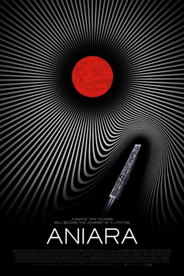

#12074 Aniara *OmU*
 
 IMDB-Wertung: 6.2 / 10
IMDB-Wertung: 6.2 / 10  Metascore: 61
Metascore: 61 
A spaceship carrying settlers to Mars is knocked off course, causing the consumption-obsessed passengers to consider their place in the universe.
Jahr: 2018
Dauer: 109 Minuten
FSK: 12
Land: Schweden Studio: SF StudiosTonspuren:
Untertitel: Deutsch,
Auflösung: 720p (1280x536) Größe: 2846 MB
Genre: Drama, Sci-Fi
Regisseur: Pella Kagerman, Hugo Lilja
Drehbuch: Pella Kagerman, Hugo Lilja, Harry Martinson
Soundtrack: Alexander Berg
Darsteller:
- Emelie Jonsson als Mimaroben
- Bianca Cruzeiro als Isagel
- Arvin Kananian als Chefone
- Jamil Drissi als The Intendent
- David Nzinga als Mima Host
- Dakota Trancher Williams als Tivo
- Brittany Cox als Mimaroben
 Matt Fowler als Chefone
Matt Fowler als Chefone Frank Gerrish als Chief Engineer
Frank Gerrish als Chief Engineer- Meghan Lewis als Isagel
- Pablo Salvador N.G. als Spaceman
- Anneli Martini als The Astronomer
- Jennie Silfverhjelm als Libidel
- Emma Broomé als Chebeba
- Leon Jiber als Daisi Doody
- Peter Carlberg als Chief Engineer
- Juan Rodríguez als The Man from Gond
- Otis Castillo Ålhed als Isagel's younger child
- Dante Westergårdh als Isagel's younger child
- Elin Lilleman Eriksson als Yaal
- Agnes Lundgren als Heba
- Alexi Carpentieri als Lyktan
- Mattias Appelqvist als Libidinne Cult Member
- Unn Dahlman als Libidinne Cult Member
- Laila Ljunggren als Libidinne Cult Member
- Thomas Lundgren als Libidinne Cult Member
- Malin Olsson als Libidinne Cult Member
- Susanna Salonen als Libidinne Cult Member
- Cornelia Sjöblom als Libidinne Cult Member
- Oskar Snickars als Libidinne Cult Member
- Max Stenerudh als Bird Clown Sandon
- Markus Waltå als Bird Clown Sandon
- Carl Kumlin als The clerk at Tundra 12
- Masoud Owji als First Navigator
- Andreas Wicklund als Hondo
- Jacob Stefansson als Spacevaluable in the Lightyear hall
- Malin Friis als Receptionist
- Jörgen Hallqvist als Restaurant Manager
- Tobias Cronwall als Watch Officer
- Pau Boluda Hernández als Interpreter
- Mats Plyhr als Space Snob
- Rabie Jirjis als Crying Man
- Ida Sandberg als Child with drawing
- Inez Kontio als Miman's voice
- Nicole Ardizzone als Chefone's lackey
- Nicklas Dahlin als Chefone's lackey
- Mikaela Stenström als Space Cadet
- Vinicio Skoog als Tired Space Cadet
- Hans Svensson als Male Midwife
- Tobias Sondén als Shot Passenger
Datei: X:\2018(A-F)\Aniara OmU (2018, FSK12, 1280x536).mkv seit 01.12.2019
Festplatte: HD 2017(A-Z)-2018(A-F)
 Es gibt insgesamt 151 Filme in der Gruppe '2018(A-F)'
Es gibt insgesamt 151 Filme in der Gruppe '2018(A-F)'